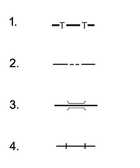

Souvent vu à l'examen
On vous demande d'effectuer des photos d'une antenne située en haut d'un pylône qui a une hauteur de 115 mètres. A la demande de l'entité responsable de cette antenne, en vous tenant dans un rayon horizontal de 50 m de cette antenne, vous pourrez monter jusqu'à une hauteur maximale au-dessus de l'antenne de :
15 mètres.
Cartes OACI
carte de type conique conforme (carte OACI 1/500 000) la direction d'un méridien donne la direction : du nord vrai.
OACI IGN au 1/500 000, un point rouge entouré d'un cercle (rouge) représente un parc ou une réserve naturelle de petite taille.
Attention avec un carré rouge représente une installation portant une marque distinctive ou une centrale nucléaire.
Carte de restriction pour la catégorie ouvert et l'aéromodélisme est élaborée par la DGAC et l'IGN et disponible sur géoportail.gouv
Pour connaître les heures d'activité de la zone réglementée voir le complément aux cartes aéronautiques de vol à vue.
Les obstacles, chiffre entre parenthèse : hauteur en pied ASFC, chiffre en haut : altitude du sommet par rapport au niveau moyen de la mer

En vous référant à l'image montrée à l'écran, le signe conventionnel sur une carte OACI qui représente une ligne téléphonique est le numéro :
1 2 --> frontière internationale ; 3 --> un pont routier ; 4 --> une voie ferrée.
En vous référant à l'image montrée à l'écran, le signe conventionnel sur une carte OACI qui représente une tour d'observation est le numéro :
31 --> château / fort ; 2 --> centrale nucléaire ; 4 --> aérodrome civil ; 5 --> aérodrome réservé aux hélicos ; 6 --> des ruines ; 7 --> aérodrome terrestre militaire ; 8 --> aérodrome fermé
L'altitude topographique d'un aérodrome est précisée :
1 - sur les cartes aéronautiques 1 : 500 000
2 - sur les cartes VAC
3 - dans les messages de types NOTAM (Notice to Air Men)
4 - dans les messages METAR
Choisissez la réponse exacte la plus complète.
1 - 2.
En vous référant à l'image montrée à l'écran, le signe conventionnel sur une carte OACI qui représente un groupe d'obstacles éclairés est le numéro :
43 --> groupe d'obstacles non éclairés ; 6 --> volcan en activité ; 8 --> obstacle exceptionnellement élevé éclairé
Sur une carte aéronautique 1 : 500 000, les obstacles sont représentés lorsque leur hauteur est supérieure à...
100 m.
En vous référant à l'image montrée à l'écran, le signe conventionnel sur une carte OACI qui représente des bâtiments est le numéro :
31 --> ligne haute tension
Carte VAC
DA : C’est la distance de l’aéronef à la droite support de l’axe de piste
DC : C’est la distance de l’aéronef au centre de l’aire d’approche finale et de décollage (le centre de l’hélistation).
Zone contrôlée au sol : UAS est exploité dans cette zone et l'exploitant garanti que seul les participants sont présents.
Longueur des pistes revêtues sur les cartes VAC en m
Sur une carte d'approche à vue (VAC), les directions et les distances des aérodromes voisins sont donnée par : cap magnétique et en NM
Guide aviation
Performance de l'UAS
Vous allez faire voler votre UAS par temps très chaud, vous pouvez vous attendre
à une diminution des performances en raison de la diminution de la densité de l'air
Vous achetez un UAS de classe C5, son fonctionnement :
Doit le rendre indépendant de l'unité de commande.
Pour connaître les limites techniques d'utilisation de votre UAS, vous utilisez :
Le manuel d'utilisation.
Un UAS de classe 6 doit être capable de fournir pendant le vol, au pilote à distance, des informations claires et concises sur :
Sa position géographique, sa vitesse et sa hauteur au-dessus de la surface ou du point d'envol.
En VLOS, au-dessus d'une zone contrôlée au sol, sans survole d'un rassemblements de personnes, le drone peut avoir une dimension caractéristique maximale (envergure, ou un diamètre de rotor ou une distance entre les rotors) :
Pouvant aller jusqu'à 3 mètres.
Quel paramètre permettra d'assurer une bonne maniabilité de votre UAS tout au long de ses évolutions en vol
S'assurer d'une bonne sécurisation de la charge transportée.
Les informations publiées sur les capacités de performance des aéronefs sans équipage à bord sont toujours liées...
à l'atmosphère standard.
Un systèmes de Géolocalisation et Navigation par un Système de Satellites (GNSS) classique...
Assure une couverture mondiale.
L'utilisation d'un aéronef sans équipage à bord à proximité d'une zone de fortes perturbations électromagnétique est...
Autorisée seulement si le pilote à distance peut confirmer qu'il n'y aura d'interférence pas avec la télécommande avant et pendant le vol.
Le nombre minimal de satellites GNSS disponibles nécessaires pour calculer la position complète d'un aéronef (latitude, longitude et altitude) est de :
4
La vitesse fournie par le GPS est une vitesse...
Sol.
Sans rentrer d'autres paramètres, un GPS peut fournir directement au pilote à distance :
La vitesse sol et l'heure UTC.
Calculs
Sur une carte d'échelle 1 : 250 000, 2,5 cm représentent :
6,25 km
Une distance de 37 km entre deux villes équivaut en nautiques (NM) à :
20 NM. il faut diviser par 1.852km
Un mètre (m) équivaut à :
3,28 ft.
Procédures
Votre drone sort de la géographie de vol, quitte le volume d'exploitation puis pénètre dans la zone tampon, vous déclenchez dans l'ordre :
La procédure d'intervention, puis la procédure d'urgence.
Le document qui vous permet de savoir s'il y a une activité particulière en cours sur un aérodrome situé à proximité de votre zone de vol est :
Le NOTAM.
Le plan d'intervention d'urgence consiste à :
Disposer d'une réponse adaptée et réfléchie en cas de survenance d'une situation d'urgence.
A la préparation du vol, vous vous renseigner sur les observations et prévisions météorologique, vous trouverez des informations pertinentes :
Sur le site internet de l'aviation civile qui vous orientera vers des liens pertinents pour obtenir des informations météorologiques à jour.
L'acronyme «ERP» désigne en français
Plan d'intervention d'urgence (Emergency Rescue Plan)
Dans le cadre d'une check-list prévol, que représente la procédure connue sous le nom de «MEUH» :
M météo, E environnement, U UAS et H facteurs Humain
Le plan d'intervention d'urgence permet entre autre :
De définir les critères permettant d'identifier une situation d'urgence.
Préalablement au vol en scénario STS-02, la fonction geocaging doit être
Réglée et exploitable.
Le geocaging consiste pour le télépilote
à établir un volume dans lequel l'UAS doit évoluer.
Parmi les actions préalables au vol, celle commune aux STS-01 et STS-02 qui incombe au télépilote est :
De maintenir adéquate la zone contrôlée au sol définie par l'exploitant.
En ce qui concerne les effets d'un vent fort dans un environnement escarpé sur un aéronef sans équipage à bord, on peut dire...
Qu'à proximité du sol, la turbulence générée aura un effet potentiellement désastreux pour l'aéronef.
Lors d'évolutions au-dessus d'une zone boisée, le risque majeur est...
D'entrer en collision avec des oiseaux.
titre